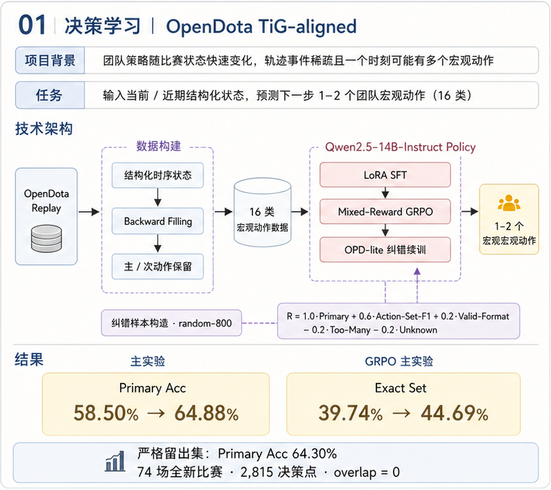

项目背景
Dota 2 的团队决策同时受到经济、英雄状态、建筑与近期战斗影响。这个项目将 Replay 整理成结构化文本，让模型根据当前及近期状态，预测队伍接下来最可能执行的 1–2 个宏观动作。
我独立完成数据构建、LoRA 后训练、纠错实验与新比赛留出评测。它是离线预测系统，不控制游戏客户端，不涉及移动或施法。监督目标来自真实事件的规则映射，不是专家标注的最优决策。
现有挑战
- 事件不是现成标签：需要把击杀、建筑、Roshan 等事件转换成动作，并对齐到之前的决策状态。
- 动作稀疏且重叠：团战、推进与资源争夺可能接连发生，需要统一主次动作与冲突处理。
- 时序泄漏风险：同局相邻状态高度相似，必须按比赛划分；未来事件可生成标签，但不能进入输入。
- 训练收益与类别回退并存：总分提升可能掩盖抓单、防塔等类别的性能下降。
总体方法：五个模块

| 模块 | 作用 | 产物 |
|---|---|---|
| 数据与标签 | Replay 状态构建、未来事件回填与冲突消解 | 状态—动作样本 |
| LoRA SFT | 学习动作映射与输出格式 | SFT Adapter |
| 轻量 GRPO | 组内采样，优化动作与集合奖励 | 策略优化 Adapter |
| OPD-lite | 基于预测回放的纠错续训 | 最终 Adapter |
| 统一评测 | 主测试集、新比赛与类别回退分析 | 效果与泛化报告 |
模块一：数据构建与未来事件回填
1. 比赛抓取、过滤与划分
以比赛为单位建立数据边界，再生成决策点。
具体实现：比赛抓取、过滤与划分
- 缓存 OpenDota 比赛 JSON，检查玩家数、时长和关键时序事件；缺少必要信息的比赛过滤。
- 先按 match_id 划分训练、验证、测试，避免同一局 20:00 和 21:00 分别进入训练与测试。
- 核对到的采样实现从 300 秒开始，每 60 秒生成双方视角状态，结合近期事件和经济、经验变化。Replay 中双方统计不等于玩家战争迷雾下的可见信息。
2. 事件检测与向前回填
从实际事件构造动作候选，并标回事件之前的状态。
具体实现：事件检测与向前回填
- 建筑事件按归属、线路和类型生成推进或防守；Roshan、团战、孤立击杀、视野和符点事件分别映射到对应动作。
- 事件时间为 tₑ，窗口为 L，则回填到 tₑ−L ≤ t ≤ tₑ。核对到的配置：Roshan / 兵营 / 遗迹 120 秒，线路塔 90 秒，团战 75 秒，抓单 / 视野 35 秒，符点 30 秒。
- 候选保存事件来源、时间、优先级与置信度；时间距离越远，置信度按窗口衰减。端点包含事件发生时刻，因此后续需要按预测提前量切片。
- 己方建筑被摧毁所对应的 Defend 是代理标签，不证明队伍实施了有效防守；无事件覆盖时的 Farm 也可能包含其他未检测行为。
3. 候选排序与输入隔离
保留一个主动作和最多一个辅助动作，阻止标签线索进入模型。
具体实现：候选排序与输入隔离
- 候选加入时间点桶，按动作优先级、置信度、事件距离排序；选最高优先级核心动作作为主标签，再保留一个不重复辅助动作。
- 统一 16 类动作：推进和防守各 5 类，另含 Team Fight、Pickoff、Roshan、Vision、Rune、Farm。
- Prompt 只包含截至 t 的状态事实和固定动作清单；future_summary、label_evidence、候选标签和决策提示不传入模型。
- 扫描禁用字段并检查 match_id、sample_id、prompt_hash 跨集合重叠。审计通过是必要条件，不等于所有隐性泄漏都已排除。
回填如何与输入隔离
教学示例，不是实际比赛记录。
20:00 发生 Roshan 击杀，回填窗口 120 秒
19:00 样本输入：只含截至 19:00 的比赛状态
19:00 样本标签：Roshan，由之后事件生成
训练：模型读状态，损失或奖励读隐藏标签
推理：不提供未来事件、标签或纠错提示模块二：LoRA SFT
1. 统一提示与目标
使用 Qwen2.5-14B-Instruct 学习状态到动作的映射。
具体实现：统一提示与目标
- user 内容由 game_state、固定动作候选和格式要求构成；assistant 目标包含简短分析和 answer 标签，首个动作是主动作。
- 使用模型 chat template 拼接训练文本；训练和评测共用动作名称与解析规则。
- 零样本基线是 Instruct 未加载 Adapter，不是预训练 Base。规则生成的分析文本不等于专家推理。
2. 训练与保存 Adapter
用参数高效训练建立后续策略优化的起点。
具体实现：训练与保存 Adapter
- 使用 TRL SFTTrainer 和 PEFT LoRA；记录配置 r=16、alpha=32、dropout=0.05，覆盖注意力与 MLP 投影。
- 支持 BF16、梯度检查点和梯度累积，最大序列长度 4096；需检查长输入截断是否截掉目标答案。
- 当前脚本未显式设置 completion-only 掩码，不能声称 SFT 只计算回答 Token 损失；保存 Adapter、Tokenizer 与训练参数。
模块三：轻量组相对策略优化
1. 对同一局面分组采样
固定输入，从当前策略生成多条候选回答。
具体实现：对同一局面分组采样
- 实验每个 Prompt 采样 4 条，温度 0.9、top_p=0.95，最大新生成长度 160 Token。
- 从最后一组 answer 标签抽取动作，兼容分隔符、归一化名称并去重，同时记录未知动作。
- 隐藏 gt_actions 仅用于评分；合法格式要求存在标签、1–2 个已知动作且无未知项。
2. 计算组合奖励和组内优势
兼顾主动作、动作集合与格式，而不是只做字符串匹配。
具体实现：计算组合奖励和组内优势
- 奖励为：主动作正确加 1.0；集合 F1 乘 0.6；格式合法加 0.2，否则减 0.3；超过两个已识别动作减 0.2，出现未知动作减 0.2。
- 组内计算均值与总体标准差；标准差小于 1e−6 时优势为零，否则标准化并截断到 [−3,3]。
- 优势截断不等于 PPO clipping；完全同分的组没有相对学习信号。
3. 更新回答概率
提高高奖励回答的概率，压低低奖励回答的概率。
具体实现：更新回答概率
- 重新前向计算生成序列，只对 response Token 汇总平均 log probability；使用 L = −mean(A × logp_response)。
- 优势 detach 后反向传播，执行梯度累积、梯度范数裁剪、优化器更新和学习率调度。
- 没有旧策略重要性比率、PPO Clip 或参考模型 KL，因此称为轻量组相对优化，不使用 Agent-One 中的完整 GRPO 公式。
奖励计算示例
教学示例：目标为 Team Fight、Roshan。
预测：<answer>Team Fight</answer>
主动作正确，集合 precision=1，recall=1/2，F1=2/3
格式合法，无其他惩罚
奖励 = 1 + 0.6 × 2/3 + 0.2 = 1.6模块四：OPD-lite 纠错续训
1. 回放训练预测并构造纠正目标
比较模型回答与标准动作，定位主动作和集合错误。
具体实现：回放训练预测并构造纠正目标
- 使用 SFT + GRPO 600 步模型回放训练样本；不把留出集错误加入纠错训练。
- opd_target_text 优先复用已有标准 assistant target，缺失时根据 gt_actions 构造简短模板，并非逐条调用外部 Teacher 生成。
- 比较困难样本与随机样本选择；最终采用 random-800，不应表述为只学习 800 条最难错误。
2. 低学习率续训已有 Adapter
以原始状态为输入、纠正答案为监督目标继续训练。
具体实现：低学习率续训已有 Adapter
- 训练器只拼接 prompt 与 opd_target_text；hindsight 字段仅记录是否存在，没有作为额外用户输入。
- 冻结主线为随机 800 条、80 步，从 GRPO Adapter 继续监督训练。它不包含 Teacher Top-k KL 蒸馏目标。
- 另有 token-level OPD 探索，但没有超过起点，因此单列负结果，不把它算作最终效果来源。
模块五：统一评测与结果
主动作准确率检查第一个动作；主动作 Macro-F1 关注类别平衡；Exact Set 检查动作集合完全一致。以下保留历史实验记录，不是本次重新运行。
主测试集：1,253 个有效决策点
| 阶段 | 主动作准确率 | 主动作 Macro-F1 | Exact Set |
|---|---|---|---|
| Instruct 零样本 | 17.24% | 18.49% | 7.10% |
| SFT | 58.58% | 62.65% | 39.74% |
| SFT + 轻量 GRPO | 58.50% | 63.10% | 44.69% |
| 再经 OPD-lite 续训 | 64.88% | 67.74% | 48.84% |
SFT 带来主要提升；GRPO 主动作准确率未提升，但改善了动作集合质量；纠错续训进一步提高两类指标。
严格新比赛留出集：74 场、2,815 个有效决策点
| 阶段 | 主动作准确率 | 主动作 Macro-F1 | Exact Set |
|---|---|---|---|
| Instruct 零样本 | 14.14% | 14.69% | 5.72% |
| SFT | 59.29% | 62.04% | 44.62% |
| SFT + 轻量 GRPO | 59.50% | 62.78% | 49.24% |
| 再经 OPD-lite 续训 | 64.30% | 66.12% | 51.94% |
OPD-lite 相对 GRPO：主动作准确率 +4.80 个百分点，主动作 Macro-F1 +3.34 个百分点，Exact Set +2.70 个百分点。
数据版本与实验口径
最终标签方法按项目作者确认采用未来事件回填。现存本地 V4.6 脚本和文档仍记载“当前/近期重标”，与最终说明存在差异。上述数字来自历史报告；最终回填标签的数据快照、生成脚本和评测输出之间的对应关系仍需补齐，不能视为本次已完成产物级复核。
记录中均衡训练集为 7,200 行，训练有效决策点 4,696、验证 593。均衡行数不等于独立样本数。新比赛留出与主数据 match_id、sample_id 无重叠；“positive”是记录中的有效样本口径，不代表比赛获胜。
失败案例与局限
| 留出集类别 | 纠错续训后的净正确数变化 | 观察 |
|---|---|---|
| Team Fight | +89 | 错转对 96，对转错 7 |
| Farm | +82 | 错转对 82，对转错 0 |
| Pickoff | −24 | 部分类别决策向 Farm 等动作迁移 |
| Defend Mid Tower | −12 | 防塔与团战混淆 |
负结果：从最佳 OPD-lite 起点补做 token-level OPD，留出集主动作准确率由 64.30% 降至 63.34%。只能说明本次配置没有收益，不能推出蒸馏普遍无效。
- 规则不等于最优策略：回填窗口和动作优先级引入标签噪声；命中 Replay 行为不代表提高游戏胜率。
- Replay 不等于实时玩家输入：双方统计没有严格遵循战争迷雾约束，部署仍需重新设计状态获取。
- 决策点存在相关性：同局生成多个样本，后续置信区间应按比赛重采样，并加入多随机种子实验。
- 改进优先级：补齐最终标签版本证据，再做预测提前量切片、专家标签检查与跨版本比赛验证。